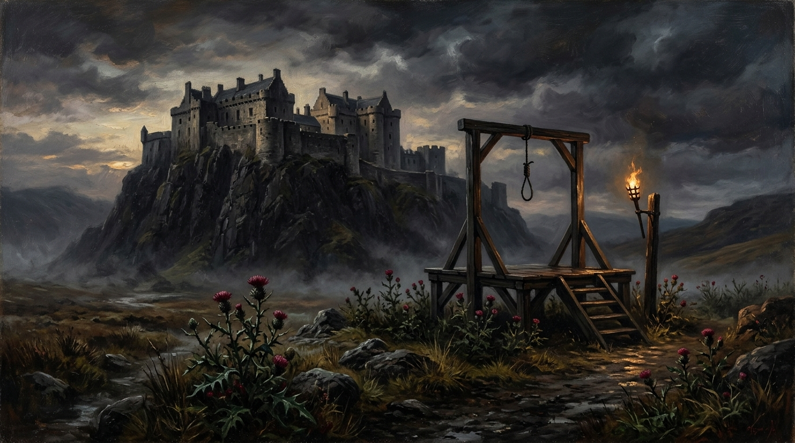

Murder by the State
The 1820 Radical Rising and the Execution of Baird, Hardie, and Wilson

“The truth is simple. These men were not judged. They were not tried. They were not lawfully sentenced. They were killed.” — Trevor Swistchew
The 1820 Radical Rising & State Treason Dossier
Archival Research & Thematic Analysis60,000 Workers Down Tools
In April 1820, Scottish weavers, ironworkers, and miners staged the first national general strike in history, posting placards calling for an Address to the Inhabitants of Great Britain and Ireland demanding electoral reform and social equality.
In 1820 three Scots stood before a court that had no lawful right to judge them—three men whose names still burn through the centuries: John Baird, Andrew Hardie, James Wilson. They were not criminals. They were not traitors. They were not rebels against a foreign crown. They were Scots demanding the rights that any equal partner in a voluntary union should possess without fear. Yet they were dragged before a Special Commission headed by Lord President Hope with Solicitor General John Hope and English barrister John Hullock driving the prosecution, and they were tried under English treason law, a law that had no authority in Scotland under the Treaty of Union. Their fate was sealed not by justice but by domination.
The Treaty of Union guaranteed that Scotland’s legal system would remain distinct, protected, untouched by English interference. Article XVIII made it explicit that Scots criminal procedure would continue, that Scotland’s courts would operate under Scotland’s laws, that England could not impose its own judicial machinery. Yet in 1820 England ignored this entirely. It did not bend the Treaty. It did not reinterpret it. It simply violated it. It imposed English treason procedure, English evidential rules, English sentencing powers, and the medieval English punishment of being drawn on a hurdle, hanged by the neck, and then beheaded, with quartering written into the sentence even if later remitted. This was not justice. This was not equality. This was not partnership. This was Murder by the State, carried out under the false banner of a Union that claimed to be voluntary and equal.
The trials were a performance staged to crush Scottish political reform. The men were denied the protections of Scots law. They were denied the rights guaranteed by the Treaty. They were denied the equality England claimed existed. They were condemned by a court that had no lawful jurisdiction, sentenced by a legal system that had no constitutional authority, and executed by a state that refused to recognise its own obligations. James Wilson was drawn, hanged, and beheaded before a crowd on Glasgow Green. John Baird and Andrew Hardie were drawn, hanged, and beheaded in Stirling. Their bodies were treated as warnings. Their deaths were meant to silence Scotland. Their executioners acted not as judges but as instruments of political terror.
England has never apologised. Not once. Not in any parliament. Not in any court. Not in any official record. It has never acknowledged the breach of the Treaty. It has never admitted that Scots law was overridden. It has never conceded that the Union was used as a weapon rather than a partnership. It has never recognised that these men were murdered under colour of law. Instead it continues to repeat the claim that the Union is voluntary, that the Union is equal, that Scotland is a partner. Yet the scaffold of 1820 exposes the truth: a voluntary union does not execute men for exercising political rights; an equal union does not impose foreign law; a just union does not violate its own founding treaty.
The hypocrisy is total. England celebrates the Union as a noble arrangement while refusing to face the fact that it used that same Union to crush Scottish voices, violate Scottish law, and execute Scottish citizens under a sentence that Scotland had never recognised. It speaks of equality while standing on the graves of men it condemned without lawful authority. It speaks of partnership while refusing to apologise for the most blatant breach of the Treaty in its history. It speaks of voluntariness while enforcing obedience with rope and blade.
The truth is simple. These men were not judged. They were not tried. They were not lawfully sentenced. They were killed. Their deaths were acts of state violence carried out under a legal framework that had no right to exist in Scotland. Their execution was not justice. It was murder. And until England apologises for this violation, acknowledges the breach, and confronts the hypocrisy of its own claims, the Union remains stained by the blood of Baird, Hardie, and Wilson—three Scots who died not because they were guilty, but because they dared to believe that equality meant something.